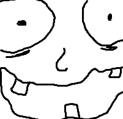

Kaasaegsed veebilehed ei tööta ainult arvutis, vaid ka telefonis ja tahvlis. Kui leht ei kohandu, peab telefoni kasutaja pidevalt suurendama ja kerima. Seda nimetatakse responsive design’iks ehk kohanduvaks disainiks. Et leht oskaks end vastavalt ekraani laiusele kohandada, lisatakse päisesse eraldi metaandmed.

| A | B |
| C | D |